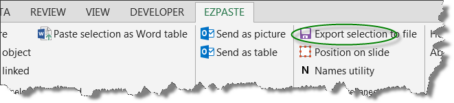
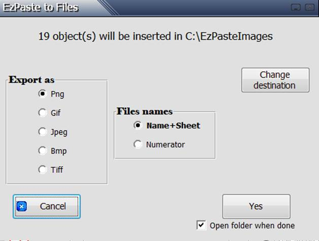

EzPaste may be used for exporting charts and tables as picture files
· Selection pasting: - Export active Excel selection from EzPaste tool bar

· Batch pasting: - EzPaste identifies automatically all the objects in the active workbook. The user then selects which of them to export (all by default), and with a click of a button, all the selected charts and tables are exported as pictures
